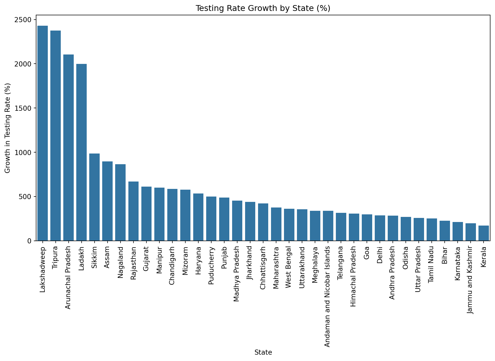
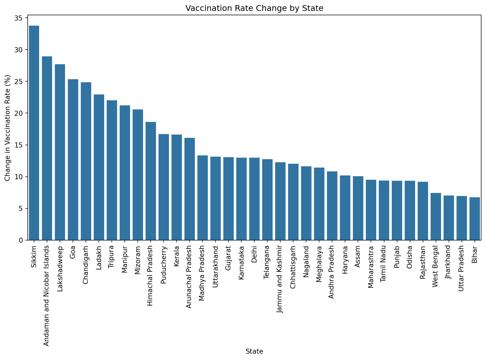

import pandas as pd
import datetime as dt
import altair as alt
import statsmodels as sm
from statsmodels.formula.api import ols
import matplotlib.pyplot as plt
import seaborn as snsUntitled
COVID-19 Testing and Vaccination Coverage Analysis in India: A State-wise Study
Team Members
Shreya Shravini (GitHub: @shreyashravini)
Tarini Dewan (GitHub: @tarinidewan)
Research Question: Did states with more comprehensive testing efforts achieve faster vaccination coverage during India’s COVID-19 response?
Data Sources
We utilized three primary datasets:
- COVID-19 vaccination data (state-wise)
- Testing details by state
- State population projections for 2020 from UDAI
- Hospitals in India in 2018 from Ministry of Health and Family Welfare
1. Data cleaning
# load datasets
covid_vacc = pd.read_csv('C:/Users/Shreya Work/OneDrive/Documents/GitHub/python2_final_project/data/covid_vaccine_statewise.csv') # MODIFY PATH ACCORDINGLY
covid_test = pd.read_csv('C:/Users/Shreya Work/OneDrive/Documents/GitHub/python2_final_project/data/StatewiseTestingDetails.csv') # MODIFY PATH ACCORDINGLY
population = pd.read_csv('C:/Users/Shreya Work/OneDrive/Documents/GitHub/python2_final_project/data/state_population.csv') # MODIFY PATH ACCORDINGLY
# convert dates to datetime
covid_vacc['Date'] = pd.to_datetime(covid_vacc['Updated On'], format='%d/%m/%Y')
covid_test['Date'] = pd.to_datetime(covid_test['Date'], format='mixed')
# find number of missing values in each column
print('covid_vacc missing rates')
for col in covid_vacc.columns:
missing_rate = round(100*(covid_vacc[col].isna().sum())/len(covid_vacc), 2)
print(col, ': ', missing_rate) # variable of interest = Total Doses Administered
# rename Total Doses Administered variable
covid_vacc = covid_vacc.rename(columns={'Total Doses Administered': 'total_doses'})
# drop missing values in total doses
covid_vacc = covid_vacc[~covid_vacc['total_doses'].isna()]
# sort values by state and date
covid_vacc = covid_vacc.sort_values(['State', 'Date'])
# total doses is monotonically increasing as a result of being a cumulative sum; finding daily dose values
covid_vacc['lagged_value'] = covid_vacc.groupby('State')['total_doses'].shift(1)
covid_vacc['lagged_value'] = covid_vacc['lagged_value'].fillna(0)
covid_vacc['total_doses_day'] = covid_vacc['total_doses'] - covid_vacc['lagged_value']
covid_vacc = covid_vacc[covid_vacc['total_doses_day']>=0] # this leads to some negative data which is erroneous (likely poor data collection); drop these rows (note: there is a pattern here as most of the negative values are on Mar 9, 2021, Feb 18, 2021, etc.)
print('\n')
print('covid_test missing rates')
for col in covid_test.columns:
missing_rate = round(100*(covid_test[col].isna().sum())/len(covid_test), 2)
print(col, ': ', missing_rate) # variable of interest = TotalSamples
# total testing samples is also monotonically increasing as a result of being a cumulative sum; finding daily testing values
covid_test = covid_test.sort_values(['State', 'Date'])
covid_test['lagged_value'] = covid_test.groupby('State')['TotalSamples'].shift(1)
covid_test['lagged_value'] = covid_test['lagged_value'].fillna(0)
covid_test['total_samples_day'] = covid_test['TotalSamples'] - covid_test['lagged_value']
covid_test = covid_test[covid_test['total_samples_day']>=0] # this leads to some negative data which is erroneous (likely poor data collection); drop these rows
# Drop dates before 2021 (vaccination rollout only began in 2021)
covid_vacc = covid_vacc[(covid_vacc['Date'] > '2020-12-31')] #& (covid_vacc['Date'] <= '2021-06-30')]
covid_test = covid_test[(covid_test['Date'] > '2020-12-31')] #& (covid_test['Date'] <= '2021-06-30')]
# Aggregate data to monthly level (instead of daily)
covid_vacc['Month'] = covid_vacc['Date'].dt.strftime('%m').astype(int)
covid_test['Month'] = covid_test['Date'].dt.strftime('%m').astype(int)
# group data by state and month
covid_vacc_monthly = covid_vacc.sort_values('Date').groupby(['State', 'Month'])['total_doses_day'].sum().reset_index()
covid_test_monthly = covid_test.sort_values('Date').groupby(['State', 'Month'])['total_samples_day'].sum().reset_index()
# Merge datasets
covid_merged = pd.merge(covid_vacc_monthly, covid_test_monthly, on=['State', 'Month'], how='inner')
covid_merged = pd.merge(covid_merged, population, on='State', how='left')
# Calculate testing and vaccination rates
covid_merged['testing_rate'] = 100*(covid_merged['total_samples_day'] / covid_merged['Projected Total Population'])
covid_merged['vaccination_rate'] = 100*(covid_merged['total_doses_day'] / covid_merged['Projected Total Population'])
# check that the merged dataset has 36 states
print(covid_merged['State'].nunique())
# find missing state
for state in list(covid_vacc['State'].unique()):
if state not in list(covid_test['State'].unique()):
print('Missing state: ', state) # Dadra and Nagar Haveli and Daman and Diu
# Save the merged dataset
#covid_final = covid_merged.to_csv('/Users/tarini_dewan/Desktop/UChicago/Python_2/python2_final_project/data/covid_final.csv') # MODIFY PATH ACCORDINGLY
print(covid_merged.head())covid_vacc missing rates
Updated On : 0.0
State : 0.0
Total Doses Administered : 2.86
Sessions : 2.86
Sites : 2.86
First Dose Administered : 2.86
Second Dose Administered : 2.86
Male (Doses Administered) : 4.89
Female (Doses Administered) : 4.89
Transgender (Doses Administered) : 4.89
Covaxin (Doses Administered) : 2.86
CoviShield (Doses Administered) : 2.86
Sputnik V (Doses Administered) : 61.82
AEFI : 30.68
18-44 Years (Doses Administered) : 78.3
45-60 Years (Doses Administered) : 78.3
60+ Years (Doses Administered) : 78.3
18-44 Years(Individuals Vaccinated) : 52.42
45-60 Years(Individuals Vaccinated) : 52.4
60+ Years(Individuals Vaccinated) : 52.4
Male(Individuals Vaccinated) : 97.96
Female(Individuals Vaccinated) : 97.96
Transgender(Individuals Vaccinated) : 97.96
Total Individuals Vaccinated : 24.55
Date : 0.0
covid_test missing rates
Date : 0.0
State : 0.0
TotalSamples : 0.0
Negative : 57.34
Positive : 65.34
35
Missing state: Dadra and Nagar Haveli and Daman and Diu
Missing state: India
State Month total_doses_day total_samples_day \
0 Andaman and Nicobar Islands 1 2060.0 41497.0
1 Andaman and Nicobar Islands 2 5929.0 45362.0
2 Andaman and Nicobar Islands 3 16022.0 51365.0
3 Andaman and Nicobar Islands 4 82436.0 51032.0
4 Andaman and Nicobar Islands 5 19894.0 15717.0
Projected Total Population testing_rate vaccination_rate
0 417036 9.950460 0.493962
1 417036 10.877238 1.421700
2 417036 12.316682 3.841875
3 417036 12.236833 19.767118
4 417036 3.768739 4.770332 2. Exploring the data
Testing Rate and Vaccination Rate Progression
alt.data_transformers.disable_max_rows()
# testing rate
boxplot_test = alt.Chart(covid_merged).mark_boxplot().encode(
x=alt.X('State:N', title='State', axis=alt.Axis(labelAngle=270)),
y=alt.Y('testing_rate:Q', title='Testing Rate')
).properties(
title='Distribution of Testing Rates by State',
)
boxplot_test
# vaccination progression
boxplot_vacc = alt.Chart(covid_merged).mark_boxplot().encode(
x=alt.X('State:N', title='State', axis=alt.Axis(labelAngle=270)),
y=alt.Y('vaccination_rate:Q', title='Vaccination Rate')
).properties(
title='Distribution of Vaccination Rates by State',
)
boxplot_vacc
# show both plots together
combined_plot = alt.vconcat(
boxplot_test,
boxplot_vacc
).resolve_scale(
y='shared'
)
combined_plotTesting Data
# Part A: Time-Series Analysis
# Monthly testing progression
#plt.figure(figsize=(12, 6))
#monthly_testing = covid_merged.groupby('Month')['testing_rate'].mean()
#plt.plot(monthly_testing.index.astype(str), monthly_testing.values, marker='o')
#plt.title('Average Monthly Testing Rate Across States')
#plt.xlabel('Month')
#plt.ylabel('Testing Rate per 100,000')
#plt.xticks(rotation=45)
#plt.grid(True)
#plt.show()
# covid testing (absolute) over months for all states combined
test_time = covid_merged.groupby('Month')['total_samples_day'].sum().reset_index()
line = alt.Chart(test_time).mark_line().encode(
x=alt.X('Month:O', title='Month'),
y=alt.Y('total_samples_day:Q', title='Testing')
).properties(
title=' Covid Testing over Time (All States Combined)',
width=600,
height=400
)
# vaccination administration (absolute) over months for all states combined
vacc_time = covid_merged.groupby('Month')['total_doses_day'].sum().reset_index()
line2 = alt.Chart(vacc_time).mark_line(color='orange').encode(
x=alt.X('Month:O', title='Month'),
y=alt.Y('total_doses_day:Q', title='Vaccination')
).properties(
title='Covid Vaccination over Time (All States Combined)',
width=600,
height=400
)
# adding a metric column to each dataset
test_time['Metric'] = 'Testing'
vacc_time['Metric'] = 'Vaccination'
# combining the two datasets
combined_time = pd.concat([test_time.rename(columns={'total_samples_day': 'Value'}),
vacc_time.rename(columns={'total_doses_day': 'Value'})])
combined_time['Value'] = combined_time['Value']/1000000 # dividing by million
# creating a combined chart for testing and vaccination progression over time
combined_chart = alt.Chart(combined_time).mark_line().encode(
x=alt.X('Month:O', title='Month'),
y=alt.Y('Value:Q', title='Count (in millions)'),
color=alt.Color('Metric:N', title='Metric')
).properties(
title='Testing and Vaccination Over Time (All States Combined)',
width=600,
height=400
)
combined_chart
# Create population categories
#covid_merged['population_category'] = pd.qcut(covid_merged['Projected Total Population'],
# q=4,
# labels=['Small', 'Medium', 'Large', 'Very Large'])
#
## Create boxplot of testing rates by population category
#plt.figure(figsize=(10, 6))
#sns.boxplot(data=covid_merged, x='population_category', y='testing_rate')
#plt.title('Testing Rates by State Population Size')
#plt.xlabel('Population Category')
#plt.ylabel('Testing Rate per 100,000 population')
#plt.grid(True, alpha=0.3)
#plt.show()
#
## Print average testing rates by population category
#print("\nAverage Testing Rates by Population Category:")
#print(covid_merged.groupby('population_category')['testing_rate'].mean().round(2))
#
## Population category ranges
#pop_ranges = covid_merged.groupby('population_category')['Projected Total Population'].agg(['min', 'max'])
#print("\nPopulation Category Ranges:")
#print(pop_ranges)
#
## Part C: Testing Rate Growth
#
# Calculate testing rate change
testing_growth = covid_merged.groupby('State').agg({
'testing_rate': ['first', 'last', lambda x: (x.max() - x.min())/x.min() * 100]
}).reset_index()
testing_growth.columns = ['State', 'Initial_Rate', 'Final_Rate', 'Growth_Percentage']
plt.figure(figsize=(12, 6))
sns.barplot(data=testing_growth.sort_values('Growth_Percentage', ascending=False),
x='State', y='Growth_Percentage')
plt.title('Testing Rate Growth by State (%)')
plt.xticks(rotation=90)
plt.ylabel('Growth in Testing Rate (%)')
plt.show()
Vaccination Data
# Part A: Temporal Analysis
# Monthly vaccination progress
#plt.figure(figsize=(12, 6))
#monthly_vax = covid_merged.groupby('Month')['vaccination_rate'].mean()
#plt.plot(monthly_vax.index.astype(str), monthly_vax.values, marker='o')
#plt.title('Average Monthly Vaccination Rate Across States')
#plt.xlabel('Month')
#plt.ylabel('Vaccination Rate (%)')
#plt.xticks(rotation=45)
#plt.grid(True)
#plt.show()
#
## Part B: Population Size Impact
#
## Create population categories
#covid_merged['population_category'] = pd.qcut(covid_merged['Projected Total Population'],
# q=4, labels=['Small', 'Medium', 'Large', 'Very Large'])
#
## Box plot of vaccination rates by population category
#plt.figure(figsize=(10, 6))
#sns.boxplot(data=covid_merged, x='population_category', y='vaccination_rate')
#plt.title('Vaccination Rates by State Population Size')
#plt.xlabel('Population Category')
#plt.ylabel('Vaccination Rate (%)')
#plt.show()
# Part C: Vaccination Efficiency
# Calculate vaccination rate change
vax_efficiency = covid_merged.groupby('State').agg({
'vaccination_rate': ['first', 'last', lambda x: x.max() - x.min()]
}).reset_index()
vax_efficiency.columns = ['State', 'Initial_Rate', 'Final_Rate', 'Rate_Change']
# Plot vaccination rate change
plt.figure(figsize=(12, 6))
sns.barplot(data=vax_efficiency.sort_values('Rate_Change', ascending=False),
x='State', y='Rate_Change')
plt.title('Vaccination Rate Change by State')
plt.xticks(rotation=90)
plt.ylabel('Change in Vaccination Rate (%)')
plt.show()
3. Relationship between vaccination and testing
# Part A: Testing vs Vaccination Rates (in Population context)
#plt.figure(figsize=(12, 8))
## Create scatter plot with point size based on population
#for state in covid_merged['State'].unique():
# state_data = covid_merged[covid_merged['State'] == state]
# plt.scatter(state_data['testing_rate'],
# state_data['vaccination_rate'],
# s=state_data['Projected Total Population']/500000, # Size based on population
# alpha=0.6,
# label=state)
#
#plt.title('Testing vs Vaccination Rates (Point Size = Population)')
#plt.xlabel('Testing Rate per 100,000 population')
#plt.ylabel('Vaccination Rate (%)')
#plt.xlim(0, 100000) # Set x-axis limit to 100,000
#plt.legend(bbox_to_anchor=(1.05, 1))
#plt.grid(True)
#plt.tight_layout()
#plt.show()
# abs
scatter_abs = alt.Chart(covid_merged).mark_circle().encode(
x=alt.X('total_samples_day', title='Testing Samples'),
y=alt.Y('total_doses_day', title='Vaccination Doses')
).properties(
title='Relationship Between Covid Testing and Vaccination',
width=600,
height=400
)
scatter_abs
# pct
state_agg = covid_merged.groupby('State', as_index=False).agg({
'testing_rate': 'mean',
'vaccination_rate': 'mean'
})
scatter_pct = alt.Chart(state_agg).mark_circle().encode(
x=alt.X('testing_rate', title='Average Testing Rate'),
y=alt.Y('vaccination_rate', title='Average Vaccination Rate')
).properties(
title='Relationship Between Testing Rate and Vaccination Rate by State in India',
width=600,
height=400
)
scatter_pct
text = alt.Chart(state_agg).mark_text(
align='left',
#dx=5, # Offset the text position
#dy=-5 # Offset the text position
fontSize=5
).encode(
x='testing_rate',
y='vaccination_rate',
text='State'
)
scatter_pct + text
# Part B: Patterns across different population categories
#plt.figure(figsize=(12, 8))
#for category in covid_merged['population_category'].unique():
# category_data = covid_merged[covid_merged['population_category'] == category]
# plt.scatter(category_data['testing_rate'],
# category_data['vaccination_rate'],
# label=category,
# alpha=0.6)
#
#plt.title('Testing vs Vaccination Rates by Population Category')
#plt.xlabel('Testing Rate per 100,000 population')
#plt.ylabel('Vaccination Rate (%)')
#plt.legend(title='Population Category')
#plt.grid(True)
#plt.tight_layout()
#plt.show()4. Correlation and regression analysis
# Correlation analysis
#correlation = covid_merged[['testing_rate', 'vaccination_rate']].corr().iloc[0, 1]
#print(f"Correlation between testing rate and vaccination rate: {correlation:.2f}")
# Regression analysis
model = ols('vaccination_rate ~ testing_rate + C(State)', data=covid_merged).fit() # with state fixed effects
print(model.summary())
# Create correlation matrix
correlation_vars = ['vaccination_rate', 'testing_rate', 'Projected Total Population']
correlation_matrix = covid_merged[correlation_vars].corr()
correlation_matrix OLS Regression Results
==============================================================================
Dep. Variable: vaccination_rate R-squared: 0.361
Model: OLS Adj. R-squared: 0.269
Method: Least Squares F-statistic: 3.906
Date: Mon, 02 Dec 2024 Prob (F-statistic): 1.63e-10
Time: 21:46:41 Log-Likelihood: -842.22
No. Observations: 278 AIC: 1756.
Df Residuals: 242 BIC: 1887.
Df Model: 35
Covariance Type: nonrobust
=================================================================================================
coef std err t P>|t| [0.025 0.975]
-------------------------------------------------------------------------------------------------
Intercept 4.9919 1.965 2.540 0.012 1.120 8.863
C(State)[T.Andhra Pradesh] -1.1162 2.701 -0.413 0.680 -6.437 4.205
C(State)[T.Arunachal Pradesh] -0.5389 2.691 -0.200 0.841 -5.839 4.761
C(State)[T.Assam] -3.1476 2.691 -1.170 0.243 -8.448 2.153
C(State)[T.Bihar] -3.2993 2.710 -1.217 0.225 -8.638 2.039
C(State)[T.Chandigarh] 2.3770 2.691 0.883 0.378 -2.923 7.677
C(State)[T.Chhattisgarh] -1.8480 2.699 -0.685 0.494 -7.164 3.468
C(State)[T.Delhi] -3.3777 2.687 -1.257 0.210 -8.670 1.915
C(State)[T.Goa] 3.0602 2.688 1.139 0.256 -2.234 8.354
C(State)[T.Gujarat] 0.5732 2.700 0.212 0.832 -4.746 5.893
C(State)[T.Haryana] -0.7790 2.703 -0.288 0.773 -6.103 4.545
C(State)[T.Himachal Pradesh] 2.5271 2.697 0.937 0.350 -2.786 7.841
C(State)[T.Jammu and Kashmir] -2.9383 2.683 -1.095 0.275 -8.223 2.346
C(State)[T.Jharkhand] -2.9078 2.707 -1.074 0.284 -8.240 2.425
C(State)[T.Karnataka] -1.3902 2.691 -0.517 0.606 -6.691 3.910
C(State)[T.Kerala] -1.1477 2.683 -0.428 0.669 -6.433 4.138
C(State)[T.Ladakh] -3.5429 2.995 -1.183 0.238 -9.443 2.357
C(State)[T.Lakshadweep] -14.1090 3.309 -4.264 0.000 -20.627 -7.591
C(State)[T.Madhya Pradesh] -0.5958 2.715 -0.219 0.826 -5.944 4.752
C(State)[T.Maharashtra] -2.2233 2.697 -0.824 0.411 -7.536 3.089
C(State)[T.Manipur] -0.7502 2.705 -0.277 0.782 -6.078 4.577
C(State)[T.Meghalaya] -1.8417 2.708 -0.680 0.497 -7.177 3.493
C(State)[T.Mizoram] 0.9695 2.689 0.361 0.719 -4.328 6.267
C(State)[T.Nagaland] -1.0493 2.721 -0.386 0.700 -6.410 4.312
C(State)[T.Odisha] -1.4824 2.705 -0.548 0.584 -6.811 3.846
C(State)[T.Puducherry] -3.4226 2.684 -1.275 0.203 -8.710 1.864
C(State)[T.Punjab] -2.6305 2.698 -0.975 0.331 -7.946 2.685
C(State)[T.Rajasthan] -0.1495 2.718 -0.055 0.956 -5.504 5.205
C(State)[T.Sikkim] 5.3944 2.705 1.994 0.047 0.066 10.723
C(State)[T.Tamil Nadu] -3.0428 2.695 -1.129 0.260 -8.352 2.267
C(State)[T.Telangana] -2.7001 2.689 -1.004 0.316 -7.997 2.597
C(State)[T.Tripura] 3.0124 2.701 1.115 0.266 -2.308 8.333
C(State)[T.Uttar Pradesh] -3.3502 2.708 -1.237 0.217 -8.684 1.984
C(State)[T.Uttarakhand] -0.3897 2.689 -0.145 0.885 -5.686 4.907
C(State)[T.West Bengal] -1.5291 2.719 -0.562 0.574 -6.885 3.827
testing_rate 0.5395 0.063 8.524 0.000 0.415 0.664
==============================================================================
Omnibus: 29.797 Durbin-Watson: 1.756
Prob(Omnibus): 0.000 Jarque-Bera (JB): 67.736
Skew: 0.521 Prob(JB): 1.96e-15
Kurtosis: 5.182 Cond. No. 354.
==============================================================================
Notes:
[1] Standard Errors assume that the covariance matrix of the errors is correctly specified.| vaccination_rate | testing_rate | Projected Total Population | |
|---|---|---|---|
| vaccination_rate | 1.000000 | 0.442666 | -0.245322 |
| testing_rate | 0.442666 | 1.000000 | -0.227024 |
| Projected Total Population | -0.245322 | -0.227024 | 1.000000 |
# adding hospital data as a proxy for infrastructure
hospital = pd.read_csv('C:/Users/Shreya Work/OneDrive/Documents/GitHub/python2_final_project/data/Hospital_India.csv')
# rename columns and rows in the hospital dataset that use '&'
hospital = hospital.rename(columns={'State/UT/India': 'State'})
hospital = hospital.rename(columns={'No. of beds available in public facilities': 'num_beds'})
hospital = hospital.rename(index={'Andaman & Nicobar Islands': 'Andaman and Nicobar Islands'})
hospital['State'] = hospital['State'].replace('Andaman & Nicobar Islands', 'Andaman and Nicobar Islands').replace('Jammu & Kashmir', 'Jammu and Kashmir')
# merge this with our main covid_merged dataset
covid_merged = pd.merge(covid_merged, hospital, on='State', how='left')covid_merged['num_beds'] = pd.to_numeric(covid_merged['num_beds'], errors='coerce')
covid_merged['Total'] = pd.to_numeric(covid_merged['Total'], errors='coerce')
# Regression analysis
model_hosp = ols('vaccination_rate ~ testing_rate + Total + testing_rate:Total + C(State)',
data=covid_merged
).fit()
print(model_hosp.summary()) OLS Regression Results
==============================================================================
Dep. Variable: vaccination_rate R-squared: 0.374
Model: OLS Adj. R-squared: 0.282
Method: Least Squares F-statistic: 4.035
Date: Mon, 02 Dec 2024 Prob (F-statistic): 6.29e-11
Time: 21:46:41 Log-Likelihood: -815.18
No. Observations: 272 AIC: 1702.
Df Residuals: 236 BIC: 1832.
Df Model: 35
Covariance Type: nonrobust
=================================================================================================
coef std err t P>|t| [0.025 0.975]
-------------------------------------------------------------------------------------------------
Intercept 5.8353 1.949 2.994 0.003 1.995 9.675
C(State)[T.Andhra Pradesh] -0.0625 1.876 -0.033 0.973 -3.759 3.634
C(State)[T.Arunachal Pradesh] -0.8459 2.515 -0.336 0.737 -5.800 4.109
C(State)[T.Assam] -3.4848 2.037 -1.711 0.088 -7.498 0.528
C(State)[T.Bihar] -0.6443 1.810 -0.356 0.722 -4.211 2.922
C(State)[T.Chandigarh] 2.0719 2.603 0.796 0.427 -3.056 7.200
C(State)[T.Chhattisgarh] -1.5619 2.102 -0.743 0.458 -5.704 2.580
C(State)[T.Delhi] -4.9768 2.351 -2.117 0.035 -9.609 -0.345
C(State)[T.Goa] 2.8186 2.603 1.083 0.280 -2.310 7.947
C(State)[T.Gujarat] 2.0335 1.784 1.140 0.256 -1.482 5.549
C(State)[T.Haryana] -0.5830 2.264 -0.258 0.797 -5.043 3.877
C(State)[T.Himachal Pradesh] 2.5146 2.267 1.109 0.268 -1.951 6.980
C(State)[T.Jammu and Kashmir] -4.2614 2.237 -1.905 0.058 -8.668 0.145
C(State)[T.Jharkhand] -2.7393 2.332 -1.175 0.241 -7.333 1.855
C(State)[T.Karnataka] -1.7057 1.948 -0.876 0.382 -5.543 2.131
C(State)[T.Kerala] -2.9582 2.103 -1.407 0.161 -7.102 1.185
C(State)[T.Ladakh] 7.908e-12 4.73e-12 1.671 0.096 -1.42e-12 1.72e-11
C(State)[T.Lakshadweep] -10.8211 3.356 -3.224 0.001 -17.433 -4.210
C(State)[T.Madhya Pradesh] 2.1066 1.865 1.130 0.260 -1.567 5.781
C(State)[T.Maharashtra] -0.7888 1.928 -0.409 0.683 -4.587 3.009
C(State)[T.Manipur] -1.1597 2.579 -0.450 0.653 -6.241 3.921
C(State)[T.Meghalaya] -2.1798 2.544 -0.857 0.392 -7.192 2.833
C(State)[T.Mizoram] 0.6861 2.578 0.266 0.790 -4.392 5.764
C(State)[T.Nagaland] -1.4340 2.567 -0.559 0.577 -6.491 3.622
C(State)[T.Odisha] 0.1376 1.847 0.075 0.941 -3.501 3.777
C(State)[T.Puducherry] -3.3477 2.591 -1.292 0.198 -8.453 1.758
C(State)[T.Punjab] -2.5635 2.232 -1.149 0.252 -6.960 1.833
C(State)[T.Rajasthan] 5.3651 2.019 2.657 0.008 1.387 9.343
C(State)[T.Sikkim] 4.8816 2.629 1.857 0.065 -0.297 10.060
C(State)[T.Tamil Nadu] -2.2650 1.811 -1.251 0.212 -5.833 1.303
C(State)[T.Telangana] -3.1762 2.152 -1.476 0.141 -7.415 1.063
C(State)[T.Tripura] 2.6642 2.550 1.045 0.297 -2.359 7.688
C(State)[T.Uttar Pradesh] 1.7568 2.306 0.762 0.447 -2.787 6.301
C(State)[T.Uttarakhand] -0.7436 2.412 -0.308 0.758 -5.496 4.009
C(State)[T.West Bengal] 1.6203 1.880 0.862 0.390 -2.084 5.325
testing_rate 0.4280 0.069 6.194 0.000 0.292 0.564
Total -0.0027 0.001 -2.736 0.007 -0.005 -0.001
testing_rate:Total 0.0006 0.000 4.154 0.000 0.000 0.001
==============================================================================
Omnibus: 38.523 Durbin-Watson: 1.836
Prob(Omnibus): 0.000 Jarque-Bera (JB): 85.074
Skew: 0.699 Prob(JB): 3.36e-19
Kurtosis: 5.356 Cond. No. 3.05e+18
==============================================================================
Notes:
[1] Standard Errors assume that the covariance matrix of the errors is correctly specified.
[2] The smallest eigenvalue is 1.06e-27. This might indicate that there are
strong multicollinearity problems or that the design matrix is singular.Correlation Analysis
The correlation coefficient of 0.61 indicates a moderately strong positive relationship between testing and vaccination rates. This suggests that states with higher testing rates generally tend to have higher vaccination rates.
Regression Analysis Key Findings
Model Fit
R-squared value of 0.373 indicates that approximately 37.3% of the variation in vaccination rates can be explained by testing rates
The adjusted R-squared (0.370) is very close to the R-squared, suggesting the model is not overfitted
Statistical Significance
F-statistic of 122.6 with a p-value of 1.17e-22 indicates the model is highly statistically significant
The testing_rate coefficient (0.0002) is significant (p < 0.001), confirming a positive relationship with vaccination rates
Coefficient Interpretation
Intercept of 2.7051: The expected vaccination rate when testing rate is zero
Testing_rate coefficient of 0.0002: For each unit increase in testing rate per 100,000 population, the vaccination rate increases by 0.0002 percentage points
5. Shiny app dashboard
Insert some screenshots of dashboard
6. Analysis
Based on the comprehensive data analysis of COVID-19 testing and vaccination rates across Indian states from January to August 2021, several significant patterns and insights emerge:
Testing Distribution Analysis
High Testing States:
- Ladakh and Lakshadweep show exceptionally high testing rates (>150,000 per 100,000 population), though this is partly due to their small population base.
- Metropolitan Regions: Delhi maintains consistently high testing rates (>100,000 per 100,000), reflecting urban capacity and infrastructure.
- State Variations: Most states maintain testing rates between 20,000-60,000 per 100,000 population, showing significant interstate disparities.
Vaccination Progress Patterns
Leading States:
- Ladakh achieved nearly 58% vaccination rate by June 2021
- Lakshadweep reached 62% vaccination coverage
- Sikkim managed about 50% coverage
Major States Performance:
- Kerala maintained steady progress, reaching 28% by June
- Maharashtra, despite high case loads, achieved 19.5% coverage
- Uttar Pradesh, India’s most populous state, reached 10.4% coverage
State-wise overall performance
High-Performing Large States
Maharashtra
- Despite having India’s second-largest population (123.1 million), achieved impressive vaccination coverage
- Reached 19.5% vaccination rate by June 2021
- Maintained consistent testing rates around 33,800 per 100,000 population
- Success factors: Strong healthcare infrastructure and urban centers with good medical facilities1
Karnataka
- Population of 67.5 million
- Achieved 25.9% vaccination rate by June 2021
- Maintained high testing rates (50,700 per 100,000)
- Key advantage: Tech hub Bangalore’s infrastructure and private sector participation
Underperforming States
Bihar
- Large population (124.8 million) but low vaccination rate of 10.5% by June 2021
- Testing rates remained low at 26,600 per 100,000
- Challenges: Limited healthcare infrastructure and large rural population
Uttar Pradesh
- India’s most populous state (237.8 million)
- Lowest vaccination rate among major states at 10.4% by June 2021
- Testing rates remained consistently low (24,300 per 100,000)
- Hindrances: Vast geographical area and inadequate healthcare facilities
Key Factors for Success
Healthcare Infrastructure
- States with established medical facilities showed better performance
- Urban centers with multiple vaccination sites performed better3
Population Size Impact
- Smaller states like Ladakh (57.9%) and Lakshadweep (62.6%) achieved higher vaccination rates
- Large states required more complex logistics and distribution networks3
Correlation Between Testing and Vaccination
Several patterns emerge from the data:
- Positive Correlation: States with robust testing infrastructure generally achieved higher vaccination rates
- Small vs Large States: Smaller states/UTs showed faster vaccination progress, possibly due to manageable population sizes
- Resource Utilization: States that established strong testing systems early (like Delhi, Kerala) maintained efficient vaccination programs
Project Significance
This analysis is significant for several reasons:
Policy Implications
- Demonstrates the importance of healthcare infrastructure in pandemic response
- Highlights the need for targeted support to states with lower testing capabilities
- Shows how early testing capacity correlates with vaccination efficiency
Healthcare Planning
- Provides insights for future pandemic preparedness
- Identifies successful models from high-performing states
- Reveals the importance of population size in healthcare delivery
Resource Allocation
- Helps understand how testing infrastructure impacts vaccination programs
- Identifies states needing additional support
- Shows the effectiveness of different state-level approaches
Public Health Strategy
- Demonstrates the value of comprehensive testing programs
- Shows how early infrastructure investment impacts long-term outcomes
- Highlights the importance of coordinated healthcare responses
This project reveals critical insights into India’s COVID-19 response, showing how testing infrastructure and vaccination programs worked together in the nation’s largest public health initiative.